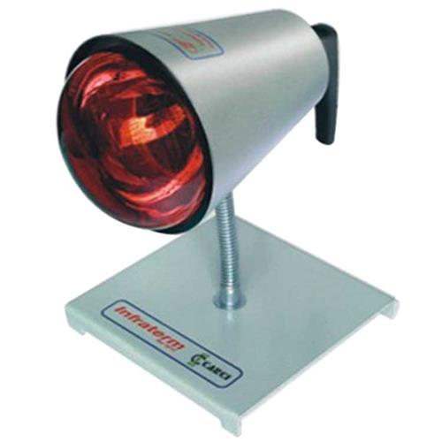

Infravermelho
Definição
{{ objeto_infravermelho.definicao}}
Manuseio
{{ objeto_infravermelho.manuseio}}
Indicações
- {{ objeto_infravermelho.indicacao1}}
- {{ objeto_infravermelho.indicacao2}}
- {{ objeto_infravermelho.indicacao3}}
- {{ objeto_infravermelho.indicacao4}}
- {{ objeto_infravermelho.indicacao5}}
Contraindicações
- {{ objeto_infravermelho.contraindicacao1}}
- {{ objeto_infravermelho.contraindicacao2}}
- {{ objeto_infravermelho.contraindicacao3}}
- {{ objeto_infravermelho.contraindicacao4}}
- {{ objeto_infravermelho.contraindicacao5}}
- {{ objeto_infravermelho.contraindicacao6}}
- {{ objeto_infravermelho.contraindicacao7}}
- {{ objeto_infravermelho.contraindicacao8}}
Riscos
- {{ objeto_infravermelho.riscos1}}
- {{ objeto_infravermelho.riscos2}}
- {{ objeto_infravermelho.riscos3}}
- {{ objeto_infravermelho.riscos14}}
Intensidade
{{ objeto_infravermelho.intensidade}}
{{ objeto_infravermelho.lei}}
Frequência
Tempo de aplicação:
{{objeto_infravermelho.TAplicacao}}
Distância da lâmpada:
{{objeto_infravermelho.DLampada}}
Penetração em média:
{{objeto_infravermelho.PMedia}}
Efeitos Biológicos
- {{objeto_infravermelho.efeitoBiologico1}}
- {{objeto_infravermelho.efeitoBiologico2}}